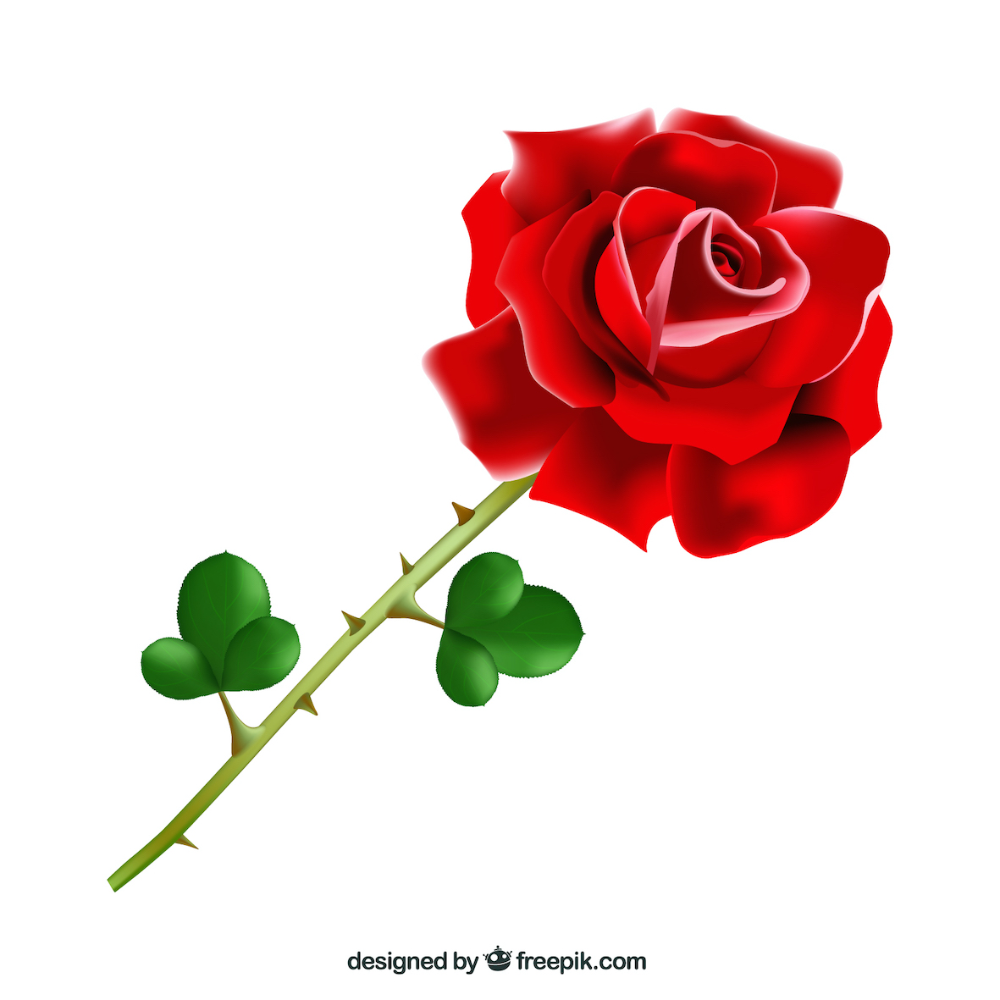

Red Roses
Red roses are classic symbols of love and passion. They are available in various shades, from deep crimson to lighter red.
Roses, often heralded as the "queen of flowers," have captured hearts and minds for centuries with their exquisite beauty and captivating fragrance. These iconic blooms are not just a symbol of love but a testament to nature's artistry. In the world of flora, roses stand out as one of the most diverse and beloved species. They come in a rich spectrum of colors, each carrying its own unique symbolism. The classic red rose represents love and passion, while soft pink symbolizes admiration and gratitude. White roses signify purity and innocence, and yellow roses convey friendship and joy. From deep burgundy to delicate lavender, there's a rose for every sentiment and occasion.
In our shop, the world of roses comes alive in a kaleidoscope of
choices. From the iconic red roses that speak of love's passion to the
soft and delicate pink roses that convey admiration and gratitude, we
offer a spectrum of colors that suit every emotion. You'll find
pristine white roses symbolizing purity, joyous yellow roses
representing friendship, and even exotic and rare varieties that bring
an element of surprise and intrigue to your floral gifting experience.
Our team of expert florists is here to guide and assist you in
choosing the perfect roses for your special moments. Whether you're
creating a romantic bouquet for an anniversary, surprising a friend
with a cheerful arrangement, or simply treating yourself to the
elegance of these timeless blooms, our shop is your go-to destination.
Beyond the classic rose varieties, we also offer specialized
arrangements, custom designs, and artistic creations to make your
roses truly one-of-a-kind. You can select from various bouquet sizes,
vase styles, and complementary accents to tailor your purchase to your
unique vision and the preferences of the recipient.
At our shop, we take pride in providing not just roses but an entire
experience of beauty, fragrance, and sentiment. We invite you to
explore the enchanting world of roses with us, discovering how these
flowers can transform ordinary moments into extraordinary memories.
Whatever the occasion, our diverse collection of roses is sure to
inspire and delight, ensuring that you find the perfect blossom to
convey your feelings and create lasting impressions.
Our roses are carefully cultivated by reputable growers who prioritize fair labor practices, environmental sustainability, and community well-being. We are dedicated to supporting partnerships with local and global suppliers who share our values, ensuring that every rose we sell contributes positively to the world.
Red roses are classic symbols of love and passion. They are available in various shades, from deep crimson to lighter red.
White roses represent purity and innocence. They are commonly used in weddings and for sympathy arrangements.
Rare and enchanting, blue roses symbolize mystery and the unattainable, making them a truly special gift.
Coral roses are a blend of orange and pink, symbolizing desire and enthusiasm. They can be used to express both love and fascination.
Yellow roses signify friendship, joy, and happiness. They are often given as a gesture of appreciation and to celebrate friendships.
Pink roses symbolize gratitude, admiration, and appreciation. Light pink roses convey sweetness and thoughtfulness, while dark pink roses represent gratitude and appreciation.
Step into our floral wonderland, where you'll find a stunning array of roses in every color and variety. We take pride in sourcing the freshest and most beautiful roses to ensure they grace your special occasions with their unmatched charm.
Every sentiment is unique, and we believe your floral arrangement should be too. Our expert florists are ready to create custom arrangements tailored to your preferences, ensuring that your bouquet perfectly conveys your message.
Can't visit us in person? No problem. We offer reliable and efficient delivery services, bringing the joy of roses right to your doorstep. Whether it's a birthday, anniversary, or just a thoughtful gesture, we'll make sure your bouquet arrives in perfect condition.
We specialize in curating roses for special occasions, including weddings, anniversaries, and corporate events. Let us turn your special day into an unforgettable memory with our stunning rose arrangements.
Looking for a unique gift to delight your loved ones? Our shop offers a range of rose-inspired gifts, from scented candles to rose-infused bath products, all designed to add an extra touch of elegance to any occasion.
Our knowledgeable team is always available to provide expert advice on rose care, selection, and floral arrangements. We're here to help you choose the perfect roses for your needs.
At Roses, we believe that roses are not just flowers but the embodiment of love, passion, and beauty. We are committed to helping you express your feelings through the enchanting language of roses. Visit us today or explore our online store to discover the magic of our roses. Let us be your partner in making your moments memorable. Come and experience the world of roses at Roses, where elegance truly blossoms.